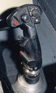

HOTAS, an acronym of hands on throttle-and-stick, is the name given to the concept of placing buttons and switches on the throttle lever and flight control stick in an aircraft's cockpit, allowing pilots to access vital cockpit functions and fly the aircraft without having to remove their hands from the controls. Application of the concept was pioneered with the Ferranti AIRPASS radar and gunsight control system used by the English Electric Lightning[1][2] and is widely used on all modern fighter aircraft such as the F-16 Fighting Falcon, the A-10A/A-10C and others.
HOTAS is a shorthand term which refers to the pattern of controls in the modern fighter aircraft cockpit. Having all critical switches on the stick and throttle allows the pilot to keep both "hands on throttle-and-stick". Used in combination with a head-up display (HUD), the pilot can focus on flying the aircraft, manipulating sensors, and engaging targets rather than looking for controls in the cockpit. The goal is to improve pilots' situational awareness, their ability to manipulate switch and button controls in turbulence, under stress, or during high G-force maneuvers, to improve reaction time, to minimize instances when hands must be removed from one or the other of the aircraft's controls to use another aircraft system, and reduce total time spent doing so.